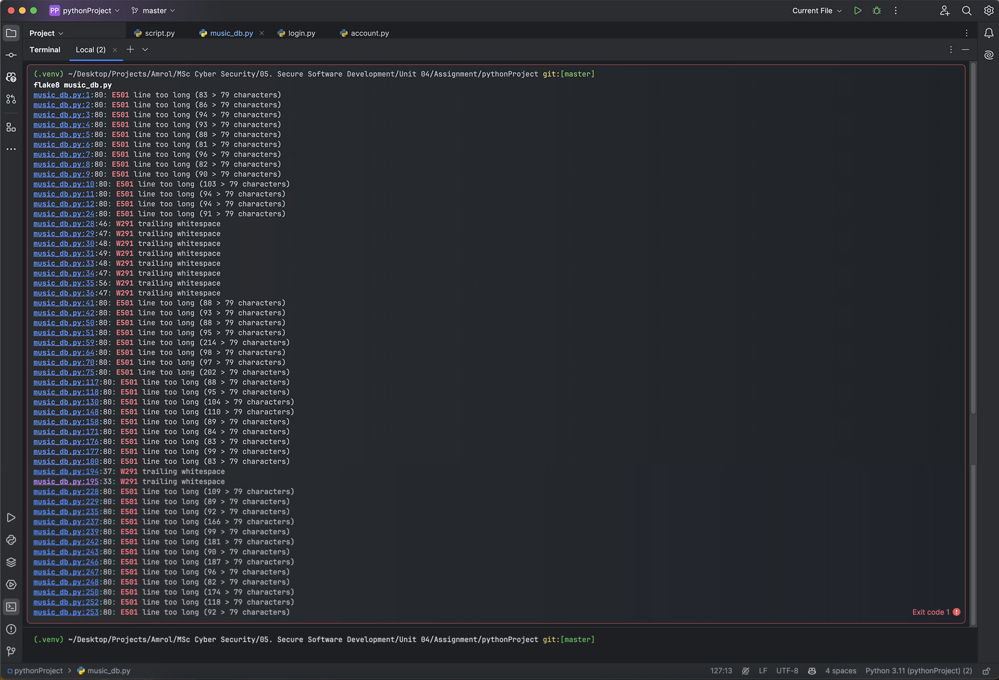

Hi there, I'm Amrol B. Miah A MSc Cybersecurity graduate based in London.
Development Individual Project: Coding Output
Secure Software Development – Unit 6
Monday, 10 June 2024, 15:15 PM
README Documentation
1. Summary
The application represents a database management system designed to oversee music copyrights. It facilitates user interactions with a music artefact database, offering comprehensive functionality in line with the CRUD (Create, Read, Update, Delete) methodology (Sumologic, n.d.). The program is developed using Python and employs SQLite3 for database management.
The software has been crafted to prioritise security and data integrity. For instance, it leverages password hashing to store and compare user passwords securely and employs transactions to guarantee atomic and consistent database operations. Additionally, it incorporates some error-handling mechanisms to capture and report exceptions that may arise during database operations.
The README file contains a report that presents examples of security testing. This demonstration showcases Bandit, Flake8 , and Safety CLI tools.
To develop this program, extensive and thorough research was conducted to explore database creation methods. This involved utilising a variety of YouTube tutorials and consulting numerous Python documentation sources, including the IDE documentation; sources can be found in the references section.
The program uses the SQLite3 module to generate supplementary files within the operational environment. Specifically, these files are denominated as account.db, housing pertinent information about system users, and music_artefact.db, encompassing comprehensive data records concerning the musical artefact; other files include musical lyrics and scores, all encapsulated within a .txt file.
To execute the program, it is imperative to ensure that all files from the project folder titled pythonProject have been successfully opened within the IDE. The .venv folder in the example should be disregarded, as it simply serves as an environment folder utilised in the IDE. Figure 2.1.1 illustrates all the files in the pythonProject root folder. Subsequently, once all the files are accessible in the chosen IDE, the script.py should be executed within the IDE terminal to engage with the program. Upon execution, users are required to input the following credentials. It is important to note that these credentials are solely for testing purposes, and users are strongly advised to employ a secure password.
username: admin
password: admin
Figure 2.1.1: All the files within the root folder of pythonProject.
2.2. account.py
This file plays an essential role in managing user accounts within the system. It encompasses a class called AccountDB, which interfaces with an SQLite3 database to execute myriad operations associated with user accounts.
Except for SQLite3, the file uses two other modules: datetime to gather the user's date of birth information and the hashlibSHA256 algorithm to encrypt the user’s passwords.
2.3. login.py
This meticulously designed document houses the Login class, which plays a pivotal role in user authentication. It is crafted to validate user credentials and manage user information, including first and last names and admin status, ensuring robust security measures.
The login.py interacts with the AccountDB class, created in the account.py file, to perform various operations related to user login; the file also uses hashlib to ensure the password is encrypted when the program prints it back to the user for verification.
2.4. music_db.py
This file is the heart of the music artefact database management. It encompasses the MusicArtefactDB class, which manages interactions with the music artefact database. It comprises methods for inserting and fetching data and updating and deleting existing records. Additionally, it incorporates methods for handling specific tasks such as reading a text file (for importing music artefacts), generating a hash for a record (for secure data storage), and formatting data using Pandas DataFrame for convenient visualisation.
The file uses several modules, including SQLite3, to create the music_artefact.db database, the datetime for recording when artefacts have been uploaded onto the system and when they have been modified. Each new modification creates a new timestamp. The hashlib is used to encrypt the music record file. A minimal Panda is used solely to format the table within the terminal. The time module allows the program to execute its command slowly while the users interact with the system, providing a better user experience. Finally, the Login class is imported from the login.py files to ensure the correct user interacts with the system.
2.5. script.py
This script is the program’s central orchestrator. It serves as the primary component for executing the program. It incorporates the Login and MusicArtefactDB classes to facilitate interaction with the user and the database. The script initiates a login prompt for the user, followed by a menu presentation displaying various options. Based on the user's selection, it invokes pertinent methods from the MusicArtefactDB class to facilitate viewing, adding, modifying, or removing music artefacts in the CRUD methodology. This script allows the user to interact with the software and perform various operations.
The file uses the getpass module to prevent the password from echoing when the user enters the terminal. It also uses the time module to slow down the program commands for a better user experience.
3. Security Testing
3.1. Bandit Scanning
The initial security tool examined during the program's development was Bandit. This tool is expressly tailored to identify known security vulnerabilities within the codebase. It can be effortlessly installed using the IDE terminal through the command pip install bandit. Upon completion of the Bandit scan, a comprehensive report delineating any security issues and specifying the line of code containing the identified flaw is generated.(Bandit, n.d.; PyCQA, 2024).
Figure 3.1.1: Report scan on account.py identifies no vulnerabilities.
Figure 3.1.2: Report scan on login.py identifies no vulnerabilities.
Figure 3.1.3: The scan of music_db.py has uncovered a security vulnerability with a medium severity rating of 1. This flaw presents a potential avenue for threat actors to exploit SQL injection. This attack vector may manifest when users update the database and are exclusively executable by administrators. The report includes a reference to an article on Mitre’s website, which provides a comprehensive explanation of SQL injection documentation, elucidating the diverse tactics employed by threat actors to manipulate queries and gain unauthorised access to the database (Mitre, 2013).
Figure 3.1.4: Report scan on script.py identifies no vulnerabilities.
3.2. Flake8 Scanning
The second implemented security tool is flake8. Analogous to Bandit, this tool scrutinises the code for potential errors and assesses its styling and complexities within the codebase. The tool was installed through the IDE terminal command using the pip install flake8 (Cordasco, 2016b; Packetcoders, 2022).
Figure 3.2.1: The scan of account.py indicates the presence of E501. According to Flake8rules (n.d.), it is recommended that line characters do not exceed 79 characters, consistent with the line limits specified in the PEP8 documentation (van Rossum et al., 2001). The occurrence of E501 is attributed to either the class commenting or the diverse data points within the SQL data.
Figure 3.2.2: The scan of the login.py file reveals the presence of characters that exceed the 79-character limit. Additionally, the analysis indicates that F541, f-strings, has no code within the placeholders (Cordasco, 2016a).

Figure 3.2.3: Analysing music_db.py file, it was observed that numerous lines exceeded the 79-character limit E501. Additionally, trailing whitespaces were identified in W291 (Flake8rules, n.d.).
Figure 3.2.4: The analysis of the script.py file also revealed a consistent styling issue, characterised by lines that exceed the specified character limit and contain trailing whitespaces
3.3. Safety CLI Scanning
The final scanning tool employed is Safety CLI, predominantly utilised on developer computers to meticulously scan each file within the project, aiming to reveal any potential code discrepancies that could lead to vulnerabilities (Pyup.io, 2024; Safetycli, 2024).
Figure 3.3.1: The analysis indicates that it is free of significant vulnerabilities. Two vulnerabilities have been identified, but the project's policy has disregarded them.
Cordasco, I.S. (2016b). Flake8: Your Tool For Style Guide Enforcement — flake8 6.0.0 documentation. [online] flake8.pycqa.org. Available at: https://flake8.pycqa.org/en/latest/ [Accessed 29 May 2024].
Corey Schafer (2017). Python SQLite Tutorial: Complete Overview - Creating a Database, Table, and Running Queries. [online] YouTube. Available at: https://youtu.be/pd-0G0MigUA?si=FjlXRwXLKwMW-M67 [Accessed 18 May 2024].
Flake8rules (n.d.). Line too long (82 > 79 characters) (E501). [online] www.flake8rules.com. Available at: https://www.flake8rules.com/rules/E501.html [Accessed 29 May 2024].
Mitre (2013). CWE - CWE-89: Improper Neutralization of Special Elements used in an SQL Command (‘SQL Injection’) (3.4.1). [online] Mitre.org. Available at: https://cwe.mitre.org/data/definitions/89.html [Accessed 29 May 2024].
PyCQA (2024). bandit: Security oriented static analyser for python code. [online] PyPI. Available at: https://pypi.org/project/bandit/ [Accessed 29 May 2024].
Pymotw (n.d.). getpass – Prompt the user for a password without echoing. - Python Module of the Week. [online] pymotw.com. Available at: https://pymotw.com/2/getpass/ [Accessed 20 May 2024].
Python Software Foundation (2002). Datetime — Basic Date and Time Types — Python 3.7.2 Documentation. [online] Python.org. Available at: https://docs.python.org/3/library/datetime.html [Accessed 19 May 2024].
van Rossum, G., Warsaw, B. and Coghlan, N. (2001). PEP 8 – Style Guide for Python Code. [online] peps.python.org. Available at: https://peps.python.org/pep-0008/ [Accessed 29 May 2024].